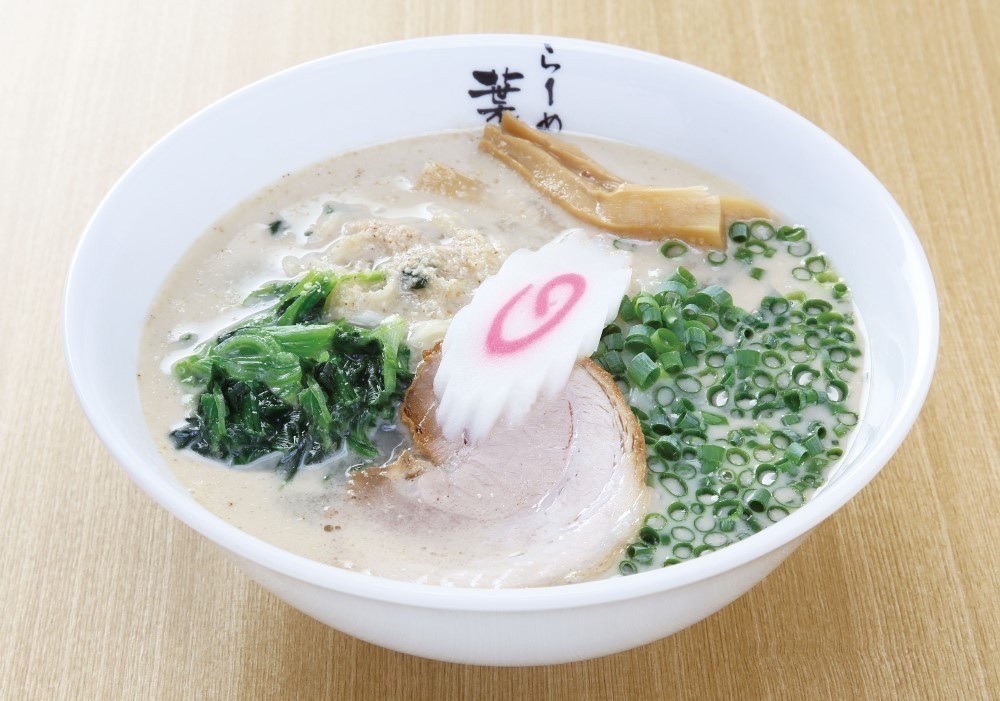
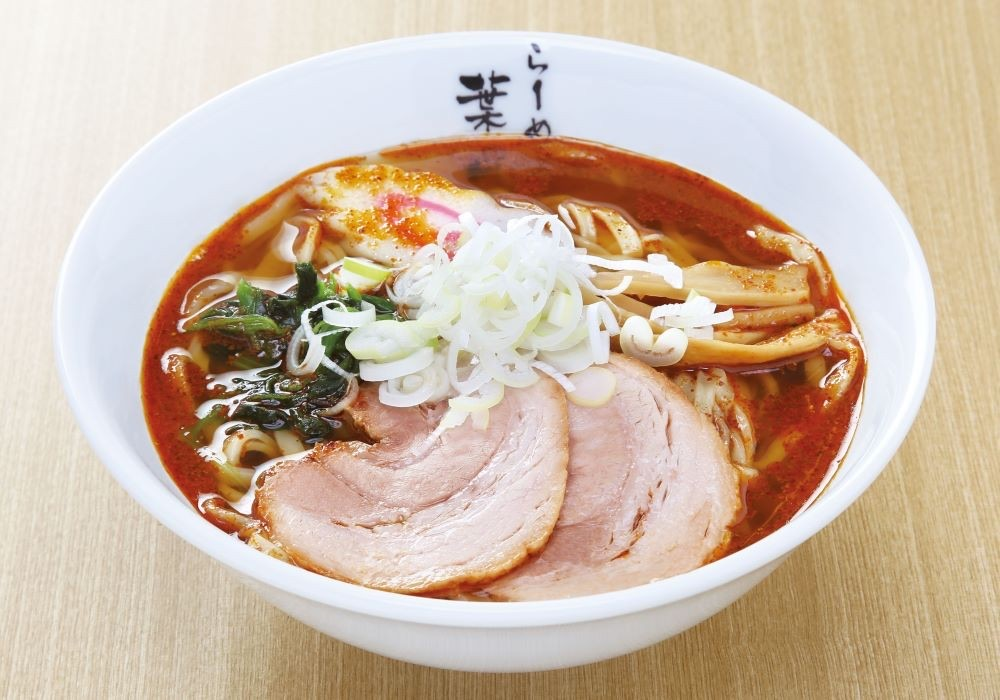
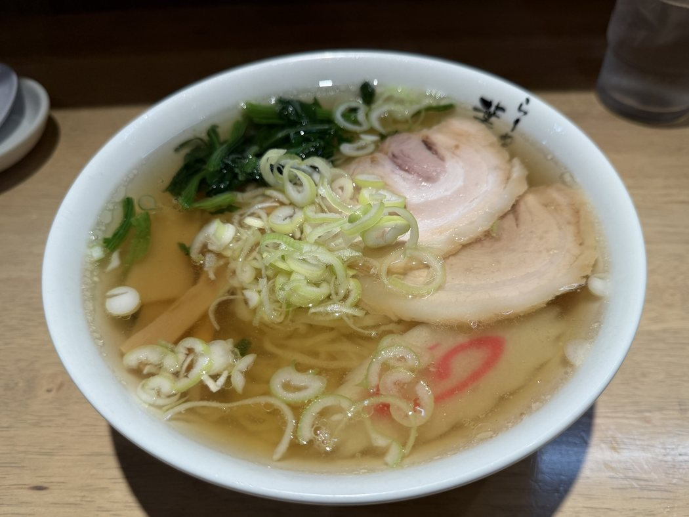
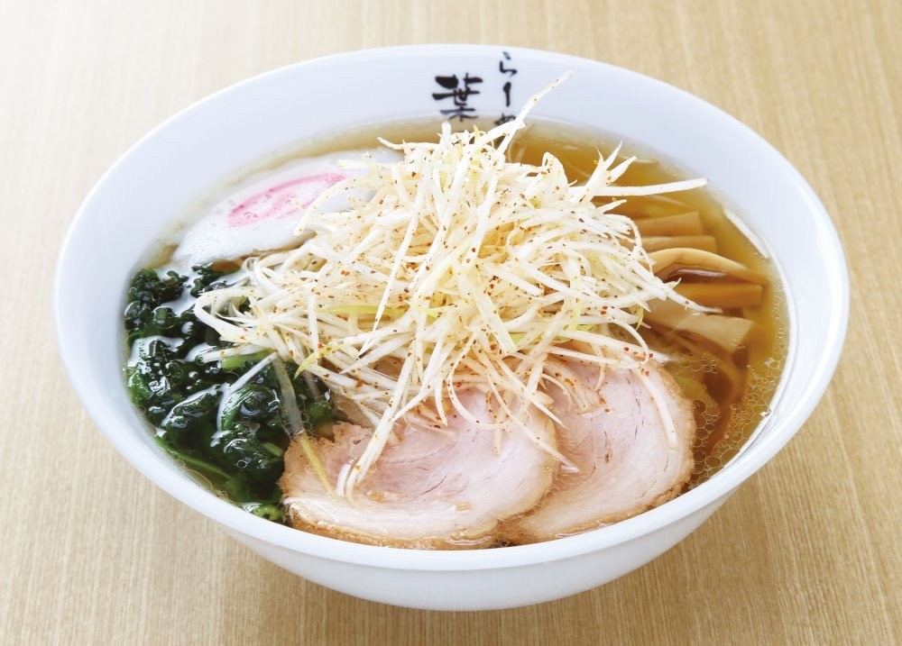
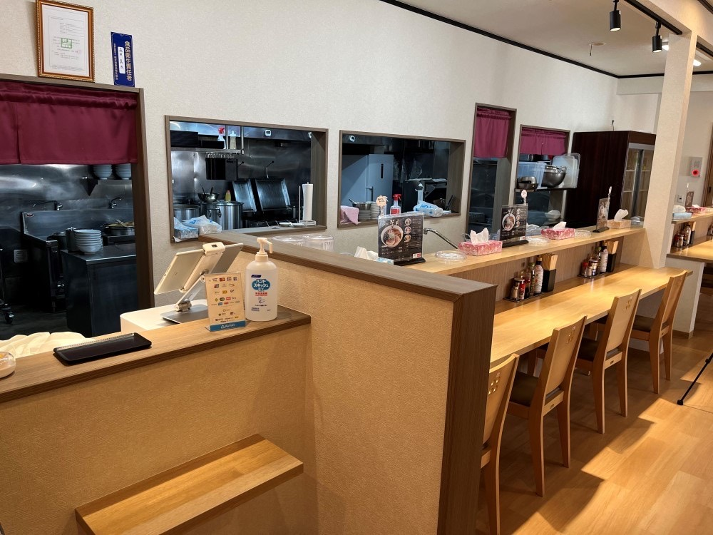
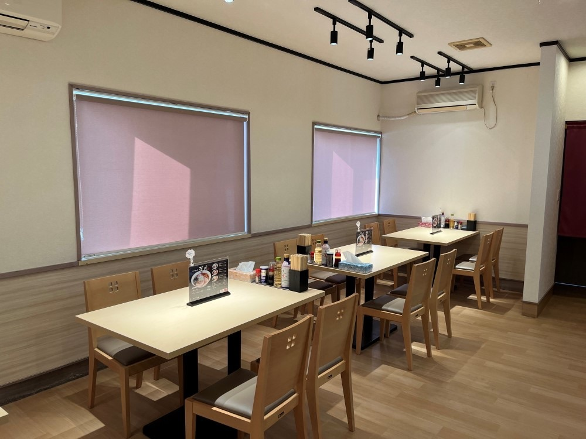
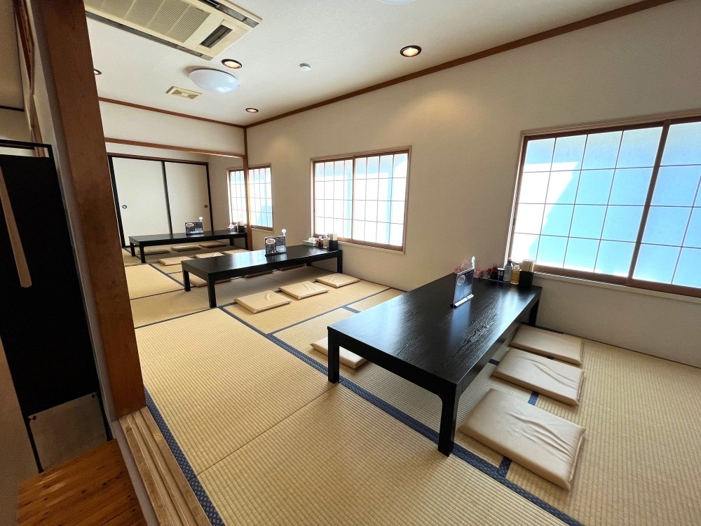
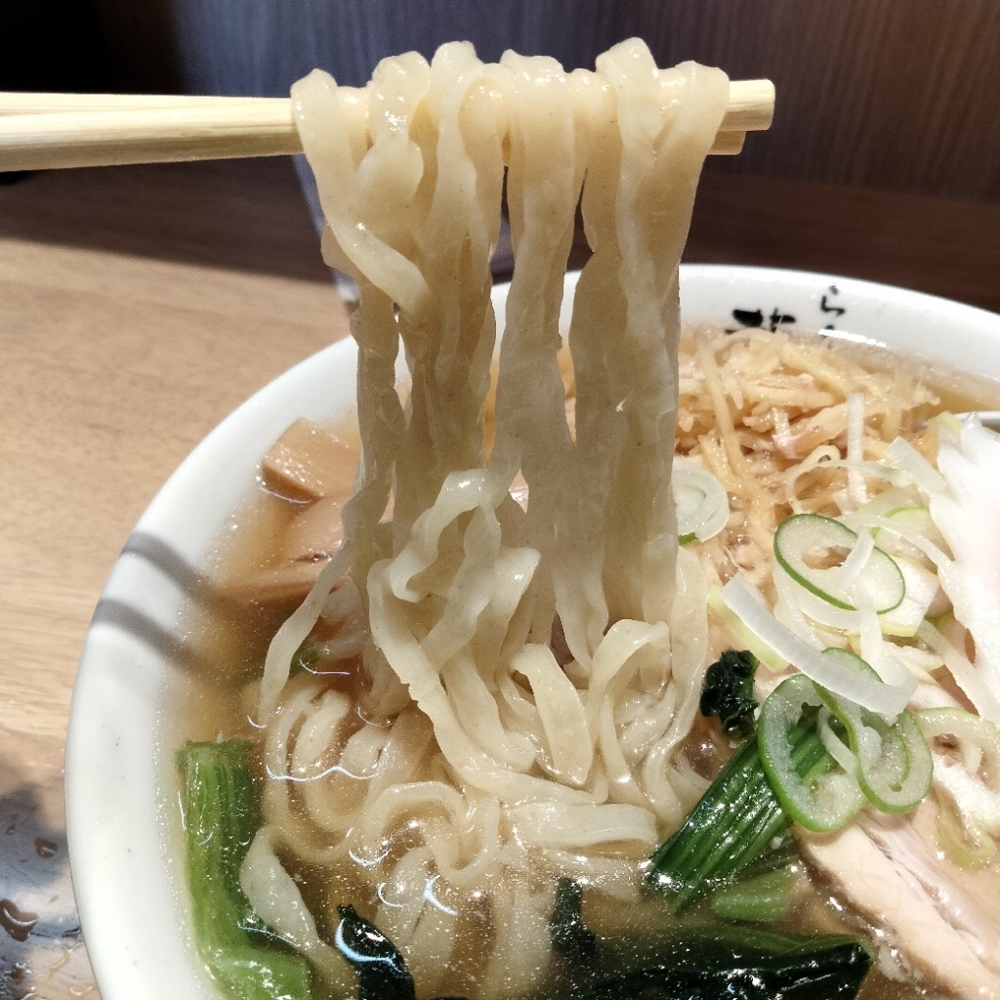

胡麻ラーメン
すりごまの香りをきかせた、まろやかな一杯です。
780円チャーシューをのせて 1,030円
佐野ラーメンを、野木町で。
平打ちの縮れ麺と、澄んだ醤油のスープ。
ここへ胡麻・辛味・ネギ・生姜と、四つの味をご用意しております。
当店のラーメンは、佐野ラーメンをもとにしております。ラーメンは700円から、 平打ちの縮れ麺と澄んだ醤油のスープに、胡麻・辛味・ネギ・生姜の四つの味をご用意しております。

すりごまの香りをきかせた、まろやかな一杯です。
780円チャーシューをのせて 1,030円

唐辛子で、しっかりと辛さをつけました。
750円チャーシューをのせて 1,000円

刻んだネギを、たっぷりとのせております。
850円チャーシューをのせて 1,100円

生姜を細く切って、香りよく仕立てました。
800円チャーシューをのせて 1,050円
カウンター、テーブル、座敷とあわせて41席をご用意しております。 お座敷にはお子様用のイスもございますので、小さなお子様とご一緒にどうぞ。 駐車場は約25台ございます。

お一人でも気兼ねなくお座りいただけます。

気の合う仲間との食事にどうぞ。

ご家族でゆっくりお寛ぎいただけます。子ども用イスもご用意しております。

平打ちの縮れ麺を、澄んだスープにくぐらせて。
| 住所 | 〒329-0101 栃木県下都賀郡野木町友沼894 |
|---|---|
| 電話 | 050-8884-8794 お席のご予約もこちらのお電話で承っております。 |
| 営業時間 | 11:00〜15:00（L.O. 14:30） 17:00〜20:30（L.O. 20:00） |
| 定休日 | 月曜日（祝日の場合は火曜日） |
| 席数 | 41席（カウンター・テーブル・座敷） |
| 駐車場 | 約25台 |
| 交通 | 野木駅から車で5分・徒歩23分 |
| お支払い | 現金・クレジットカード・電子マネー・QRコード決済 |
| その他 | 禁煙席あり テイクアウト可（当日予約OK） 子ども用イスあり |